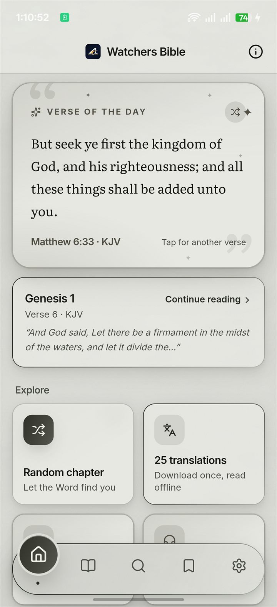
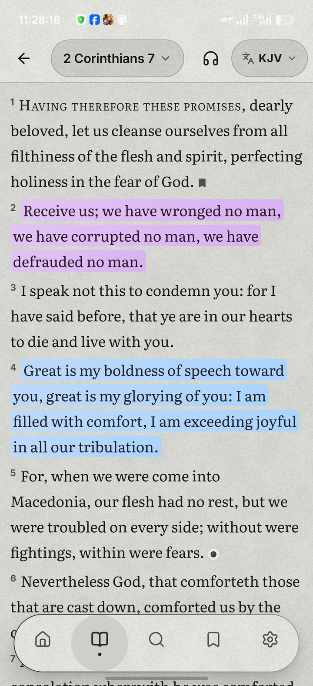
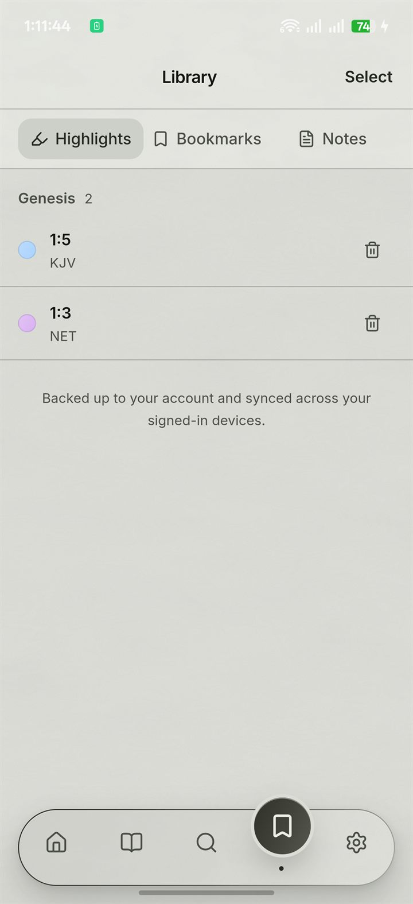
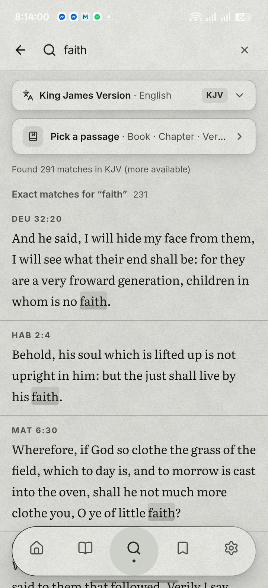
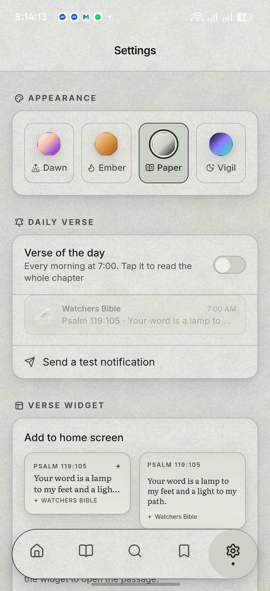
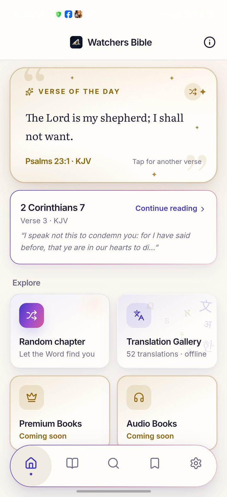
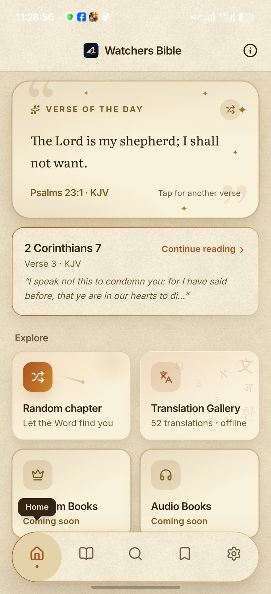
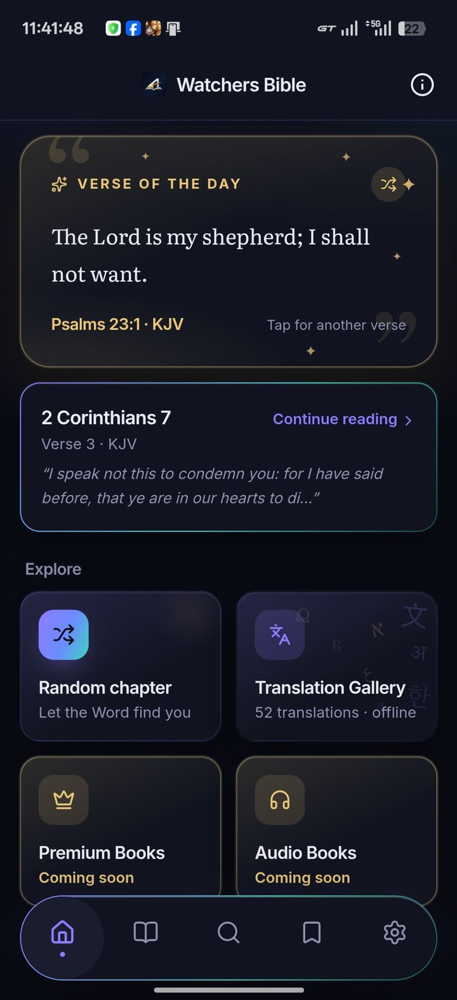

Verse of the day
Each dawn, a verse waits for you like a page left open. Tap for another; it speaks your translation.
A Bible that reads like paper
Watchers Bible puts the whole Word on your phone with a paper-white page, print‑grade ink and not a single distraction. Easy on the eyes, like reading a real book. No ads. No noise. Just you and the Scriptures.





Home · the verse of the day
Chapter One
The Paper theme turns your screen into a printed page: soft paper texture, glare‑free, no backlight burning at your face. Reading feels like a real book. No flicker, no blue light at midnight, no eye strain at hour two. Just ink resting on paper.
Be still, and know that I am God.
Psalm 46:10
Watchers Bible
Research on visual fatigue has repeatedly found e-reader style reflective displays more comfortable for extended reading than LCDs (Benedetto et al., 2013, Displays).
Chapter Two
Every other Bible app interrupts the Word with banners, interstitials and upsells. Watchers Bible has never shown a single ad, and it never will. There is nothing to sell you here.
You will never see Upgrade to Pro, limited offer, watch a 30‑second ad, your ad here or unlock premium verses in this app. Not now, not ever.
Chapter Three
The app is the quiet one. One column, honest margins, type set with care. The interface disappears the moment you start reading, the way a well printed book does. Nothing blinks, nothing begs for attention. The Word does not need decoration.
Each dawn, a verse waits for you like a page left open. Tap for another; it speaks your translation.
Mark the verses that mark you. Synced across your devices when you sign in.
Reading, search, highlights and notes all work with the network off. Airplane mode included.
87 translations in 30+ languages, with more added over time.
Send a verse as a beautiful card, not a screenshot. Or as a link that blooms into the verse itself.
Dawn, Ember, Vigil and Paper. Plus True black for OLED nights.
Chapter Four
Today’s verse doesn’t stay inside the app. Pin it to your home screen as a paper widget, and let a quiet knock arrive at seven each morning. No feed, no streak, no noise: just the verse, waiting where your eyes already are.
And for True black nights, the widget keeps a pure-black wash of its own: OLED screens stay dark and quiet.
Chapter Five
Type a word and the whole Bible answers, instantly, entirely offline. A single word brings a true concordance: every occurrence, in book order. Phrases, word forms and recent searches come along, in any translation you carry.
Exact matches for “light”
And God said, Let there be light: and there was light.
Thy word is a lamp unto my feet, and a light unto my path.
And the light shineth in darkness; and the darkness comprehended it not.
and on through the canon, in book order
Search runs on the translations stored on your device. No connection, no cloud, no waiting.
Chapter Six
A growing shelf of 87 translations in 30+ languages, carried by the faithful work of their publishers. Whatever you download, it lives on your device: private, instant, fully offline.
Chapter Seven



Four rooms, one stillness. Tap a theme to try it on.
Chapter Eight
Watchers Bible has nothing to sell: no ads, no subscriptions, nothing locked behind a paywall. The work runs on gifts alone. A gift here is not a purchase; it is the oil that keeps the lamp lit: servers answering every download day and night, audio books waiting on their shelf, new translations joining the gallery. It keeps the app free for life, and keeps this ministry moving forward.
The offering
Scan either code with any InstaPay app and send any amount. That is all a quiet gift takes.
These InstaPay (QR Ph) codes work with GCash, Maya, GrabPay, ShopeePay, Coins.ph and any InstaPay member bank app: BDO, BPI, Metrobank, UnionBank and more. Your banking app may charge a small transfer fee.
After the gift
Keep it quiet, or put your name on the supporter wall inside the app. The choice is yours.
A quiet gift needs nothing else. It will be seen, checked by hand, and quietly held. Thank you for keeping the lamp lit.
Thank you!
Your gift was received. Gifts are checked by hand, and your name joins the supporter list within 24 hours.
The receipt screenshot did not reach us, so the gift cannot be checked yet. Please submit again and enter the transaction reference number instead — the extra copy will be discarded.
The supporter wall lives inside the app: carry Watchers Bible with you.
The supporter wall of listed givers lives inside the app: this page is the only place a gift is ever asked for.